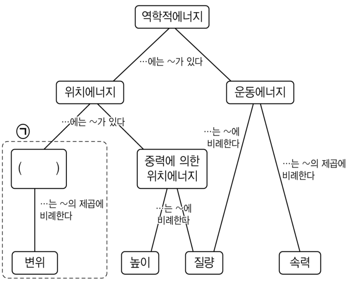
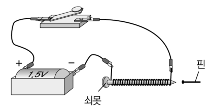

물리교육론 객관식 4문항 — 2007 개정 교육과정·개념도·반증주의의 한계·불일치 사례2007 revised curriculum levels · concept maps · limits of falsificationism · discrepant events
2007년 개정 과학과 교육과정에 근거하여 수업을 설계할 때, 학년별 내용의 수준을 옳게 설정한 것을 <보기>에서 모두 고른 것은? [1.5점]
- ㄱ. 7학년 ‘힘과 운동’에서 속력이 변하지 않는 운동, 속력이 변하는 운동, 방향이 변하는 운동 등 여러 가지 운동을 학습하고, 힘에 의한 속력 변화와 방향 변화를 알아보는 활동을 하고, 여러 가지 운동을 시간과 위치의 변화로 나타낼 수 있도록 지도한다.
- ㄴ. 8학년 ‘열에너지’에서 열평형을 설명하고, 여러 가지 금속의 비열을 측정하는 활동을 하고, 여러 가지 고체와 액체의 열팽창 정도가 다름을 알고 이를 이용한 예를 들 수 있도록 지도한다.
- ㄷ. 8학년 ‘빛과 파동’에서 볼록렌즈, 오목렌즈, 볼록거울, 오목거울 등에 의한 상 작도하기 활동을 통해 상이 생기는 원리를 알고, 물체의 위치와 상의 위치 관계를 분석할 수 있도록 지도한다.
다음은 2007년 개정 과학과 교육과정의 역학적에너지를 가르치기 위해 교사가 작성한 개념도이다.

이에 대한 설명으로 옳은 것을 <보기>에서 모두 고른 것은? [1.5점]
- ㄱ. 이 개념도에는 6개의 명제가 있다.
- ㄴ. ㉠에 대한 내용은 9학년에서 학습한다.
- ㄷ. 이 개념도에서 “위치에너지는 운동에너지로 전환된다.”는 것을 추가로 나타내면 이는 교차연결이다.
다음은 어떤 [과학 철학적 관점]을 나타낸 글과 학생의 개념변화를 위해 실시한 [시범실험의 내용과 교사와 학생들의 대화]이다.
[과학 철학적 관점] 과학은 문제에서 출발한다. 과학자들은 이 문제를 해결하기 위해 반증가능한 가설을 내어 놓는다. 어떤 가설은 반증 사례가 제시되면 곧 기각되고, 어떤 가설은 엄중한 비판과 검증을 통과하여 기각되지 않는다.
[시범실험 내용과 교사와 학생들의 대화] “무거운 물체가 가벼운 물체보다 먼저 떨어진다.”고 생각하는 학생들에게 진공 장치를 이용하여 무거운 물체와 가벼운 물체를 같은 높이에서 떨어뜨렸을 때, 동시에 떨어지는 것을 관찰하게 하였다.
교사 : 두 물체가 동시에 떨어졌지요? 그러니까, 여러분의 생각이 틀렸지요?
학생 A : 그러네요. 선생님 말씀이 맞네요. 제 생각이 틀렸다는 것을 이제 알겠네요. 무거운 물체나 가벼운 물체나 떨어지는 시간은 같네요.
학생 B : 아니에요. 제 생각이 맞아요. 제가 보기에는 무거운 물체가 먼저 떨어졌어요.
학생 C : 글쎄요. 두 물체의 무게 차이가 작기 때문에 동시에 떨어진 것으로 보일 뿐이에요. 무게 차이가 많이 나는 것으로 실험한다면, 무거운 물체가 먼저 떨어지는 것을 관찰할 수 있을 거예요.
학생 A, B, C 중에서 위에 제시된 과학 철학적 관점이 갖는 한계를 보여주는 것을 모두 고른 것은? [2.5점]
다음은 전자석에 대한 수업의 일부이다.
교사는 쇠못에 에나멜선을 촘촘하게 감은 전자석으로 그림과 같은 전기회로를 만들었다.

교사는 한 학생에게 쇠못의 끝부분에 핀을 가까이 가져가 보라고 했다. 그리고 스위치를 닫은 다음에 다시 핀을 쇠못에 가져가게 했다. 스위치가 열렸을 때 핀은 쇠못에 붙지 않았지만, 닫혔을 때는 핀이 쇠못의 끝에 달라붙었다.
이것을 보고 이 학생은 “쇠못에 전류가 흘러서 쇠못이 자석이 되었다.”고 생각했다. 그리고 “쇠못 대신에 나무막대를 코일 속에 넣으면, 나무막대에는 전류가 통하지 않으므로 핀이 달라붙지 않을 것이다.”라고 예상했다. 이 학생은 자신의 예상이 옳다는 것을 확인하기 위해 나무막대로 실험을 해보았다. 그 결과 나무막대에는 핀이 달라붙지 않았다. 그래서 학생은 자신의 생각을 더 확신하였다.
이 학생의 생각과 불일치되는 사례가 나오도록 교사가 제안할 수 있는 것으로 가장 적절한 것은? [2.5점]
정답문항별 정답 (AI 풀이 ↔ 정답표)
| 문항 | AI 풀이 | 정답표 | 배점 | 판정 | 핵심 아이디어 |
|---|---|---|---|---|---|
| 1 | ③ | ③ | 1.5 | 일치 ✓ | ㄱ(7학년 힘과 운동)·ㄴ(8학년 열에너지)은 성취기준과 일치. ㄷ은 학년(빛과 파동은 7학년)과 수준(상 작도·위치 관계 분석은 고교 물리) 모두 맞지 않는다. |
| 2 | ② | ② | 1.5 | 일치 ✓ | 연결선(명제) 9개 → ㄱ ✗. ㉠ = 탄성 위치에너지(고교 물리Ⅰ) → ㄴ ✗. 위치E 갈래와 운동E 갈래를 잇는 연결 = 교차연결 → ㄷ ✓. |
| 3 | ⑤ | ⑤ | 2.5 | 일치 ✓ | B: 관찰 자체가 기존 생각에 따라 달라짐(관찰의 이론 의존성) → 반증 사례가 객관적으로 주어지지 않는다. C: 보조 가설(무게 차이가 작았다)을 덧붙여 반증을 피함(임시방편 가설). 둘 다 반증주의의 한계. A는 반증주의대로 행동. |
| 4 | ⑤ | ⑤ | 2.5 | 일치 ✓ | 학생 생각대로면 전도체(구리)는 붙어야 하지만 실제로는 붙지 않는다(구리는 강자성체가 아님) → 예상과 결과가 어긋나는 불일치 사례. |
1문항별 풀이 — 선지·보기 분석 포함
12007 개정 교육과정의 학년별 내용 수준 1.5점
2007년 개정 과학과 교육과정에 근거하여 수업을 설계할 때, 학년별 내용의 수준을 옳게 설정한 것을 <보기>에서 모두 고른 것은? [1.5점]
- ㄱ. 7학년 ‘힘과 운동’에서 속력이 변하지 않는 운동, 속력이 변하는 운동, 방향이 변하는 운동 등 여러 가지 운동을 학습하고, 힘에 의한 속력 변화와 방향 변화를 알아보는 활동을 하고, 여러 가지 운동을 시간과 위치의 변화로 나타낼 수 있도록 지도한다.
- ㄴ. 8학년 ‘열에너지’에서 열평형을 설명하고, 여러 가지 금속의 비열을 측정하는 활동을 하고, 여러 가지 고체와 액체의 열팽창 정도가 다름을 알고 이를 이용한 예를 들 수 있도록 지도한다.
- ㄷ. 8학년 ‘빛과 파동’에서 볼록렌즈, 오목렌즈, 볼록거울, 오목거울 등에 의한 상 작도하기 활동을 통해 상이 생기는 원리를 알고, 물체의 위치와 상의 위치 관계를 분석할 수 있도록 지도한다.
1보기별 판단
- ㄱ: 7학년 ‘힘과 운동’ — 여러 가지 운동(속력 일정·속력 변화·방향 변화), 힘에 의한 속력·방향 변화, 운동을 시간–위치 변화로 표현 ✓
- ㄴ: 8학년 ‘열에너지’ — 열평형, 비열 측정, 고체·액체의 열팽창 차이와 활용 ✓
- ㄷ: 중학교 ‘빛과 파동’에서는 거울·렌즈에 의한 상의 특징을 관찰하는 수준. 광선 작도로 물체–상 위치 관계를 분석하는 것은 고등학교 물리 수준이며, 학년도 7학년 단원이다 ✗
| 선지·보기 | 해설 |
|---|---|
| ㄱ | 7학년 ‘힘과 운동’의 성취기준과 일치 ✓ |
| ㄴ | 8학년 ‘열에너지’(열평형·비열·열팽창)와 일치 ✓ |
| ㄷ | 상 작도와 물체–상 위치 관계 분석은 중학교 수준을 넘는다(고교 물리), 학년도 다름 ✗ |
| 정답 | ③ ㄱ, ㄴ |
2역학적 에너지 개념도 — 명제와 교차연결 1.5점
다음은 2007년 개정 과학과 교육과정의 역학적에너지를 가르치기 위해 교사가 작성한 개념도이다.
이에 대한 설명으로 옳은 것을 <보기>에서 모두 고른 것은? [1.5점]
- ㄱ. 이 개념도에는 6개의 명제가 있다.
- ㄴ. ㉠에 대한 내용은 9학년에서 학습한다.
- ㄷ. 이 개념도에서 “위치에너지는 운동에너지로 전환된다.”는 것을 추가로 나타내면 이는 교차연결이다.
1명제 세기
역학적E–위치E, 역학적E–운동E, 위치E–㉠, 위치E–중력 위치E, ㉠–변위, 중력 위치E–높이, 중력 위치E–질량, 운동E–질량, 운동E–속력 → 9개.
2㉠과 교차연결
㉠ = 탄성 위치에너지(\(\tfrac12kx^2\), 변위의 제곱에 비례). 9학년 ‘일과 에너지’는 중력에 의한 위치에너지와 운동에너지, 역학적 에너지 보존만 다루며 탄성 퍼텐셜은 고교에서 학습. ‘위치에너지 → 운동에너지 전환’은 서로 다른 갈래의 개념을 잇는 교차연결(Novak).
| 선지·보기 | 해설 |
|---|---|
| ㄱ | 연결선이 9개 → 명제 9개 ✗ |
| ㄴ | 탄성 위치에너지는 9학년이 아닌 고교 물리 내용 ✗ |
| ㄷ | 다른 갈래(위치E·운동E)를 잇는 연결 = 교차연결 ✓ |
| 정답 | ② ㄷ |
3포퍼의 반증주의와 그 한계 2.5점
다음은 어떤 [과학 철학적 관점]을 나타낸 글과 학생의 개념변화를 위해 실시한 [시범실험의 내용과 교사와 학생들의 대화]이다.
[과학 철학적 관점] 과학은 문제에서 출발한다. 과학자들은 이 문제를 해결하기 위해 반증가능한 가설을 내어 놓는다. 어떤 가설은 반증 사례가 제시되면 곧 기각되고, 어떤 가설은 엄중한 비판과 검증을 통과하여 기각되지 않는다.
[시범실험 내용과 교사와 학생들의 대화] “무거운 물체가 가벼운 물체보다 먼저 떨어진다.”고 생각하는 학생들에게 진공 장치를 이용하여 무거운 물체와 가벼운 물체를 같은 높이에서 떨어뜨렸을 때, 동시에 떨어지는 것을 관찰하게 하였다.
교사 : 두 물체가 동시에 떨어졌지요? 그러니까, 여러분의 생각이 틀렸지요?
학생 A : 그러네요. 선생님 말씀이 맞네요. 제 생각이 틀렸다는 것을 이제 알겠네요. 무거운 물체나 가벼운 물체나 떨어지는 시간은 같네요.
학생 B : 아니에요. 제 생각이 맞아요. 제가 보기에는 무거운 물체가 먼저 떨어졌어요.
학생 C : 글쎄요. 두 물체의 무게 차이가 작기 때문에 동시에 떨어진 것으로 보일 뿐이에요. 무게 차이가 많이 나는 것으로 실험한다면, 무거운 물체가 먼저 떨어지는 것을 관찰할 수 있을 거예요.
학생 A, B, C 중에서 위에 제시된 과학 철학적 관점이 갖는 한계를 보여주는 것을 모두 고른 것은? [2.5점]
1학생별 분석
- A: 반증 사례를 받아들여 가설을 기각 — 반증주의가 기대하는 모습(한계 아님).
- B: 같은 현상을 보고도 ‘무거운 것이 먼저 떨어졌다’고 관찰 — 관찰의 이론 의존성. 관찰이 중립적이지 않으면 결정적 반증이 불가능.
- C: ‘무게 차이가 작아서’라는 보조 가설로 핵심 가설을 지킴 — 임시방편(ad hoc) 가설, 뒤엠–콰인 논제. 반증이 논리적으로 결정적이지 않다.
| 선지·보기 | 해설 |
|---|---|
| A | 반증을 수용 — 반증주의와 일치(한계 아님) |
| B | 관찰의 이론 의존성 — 반증주의의 한계 ✓ |
| C | 보조·임시방편 가설로 반증 회피 — 한계 ✓ |
| 정답 | ⑤ B, C |
4전자석 오개념과 불일치 사례 2.5점
다음은 전자석에 대한 수업의 일부이다.
교사는 쇠못에 에나멜선을 촘촘하게 감은 전자석으로 그림과 같은 전기회로를 만들었다.
교사는 한 학생에게 쇠못의 끝부분에 핀을 가까이 가져가 보라고 했다. 그리고 스위치를 닫은 다음에 다시 핀을 쇠못에 가져가게 했다. 스위치가 열렸을 때 핀은 쇠못에 붙지 않았지만, 닫혔을 때는 핀이 쇠못의 끝에 달라붙었다.
이것을 보고 이 학생은 “쇠못에 전류가 흘러서 쇠못이 자석이 되었다.”고 생각했다. 그리고 “쇠못 대신에 나무막대를 코일 속에 넣으면, 나무막대에는 전류가 통하지 않으므로 핀이 달라붙지 않을 것이다.”라고 예상했다. 이 학생은 자신의 예상이 옳다는 것을 확인하기 위해 나무막대로 실험을 해보았다. 그 결과 나무막대에는 핀이 달라붙지 않았다. 그래서 학생은 자신의 생각을 더 확신하였다.
이 학생의 생각과 불일치되는 사례가 나오도록 교사가 제안할 수 있는 것으로 가장 적절한 것은? [2.5점]
1선지 검토
- ①: 쇠못이 전기가 통함을 보여 줌 → 학생 생각을 강화.
- ②: 꺼낸 쇠못은 (잔류 자기가 약해) 거의 붙지 않음 → ‘전류가 없으니 안 붙는다’로 해석되어 강화.
- ③④: 나무·유리는 부도체이고 붙지 않음 → 학생 예상과 일치(강화).
- ⑤: 구리는 전도체인데도 붙지 않음 → ‘전류가 통하면 자석’이라는 생각과 정면으로 어긋난다 ✓
사실 에나멜선은 절연되어 있어 쇠못에는 전류가 흐르지 않는다. 쇠못이 자석이 되는 것은 코일 전류의 자기장이 강자성체를 자화하기 때문이다.
| 선지·보기 | 해설 |
|---|---|
| ① | 쇠못에 전류가 통함을 확인 — 생각을 강화 |
| ② | 꺼낸 쇠못은 거의 붙지 않음 — 학생 생각과 모순되지 않음 |
| ③ | 부도체·비자성 — 예상과 결과 일치 |
| ④ | 유리도 부도체 — 예상과 일치(강화) |
| ⑤ | 전도체인 구리가 붙지 않음 — 불일치 사례 ✓ |
2출제 의도·검토
출제 의도
- 1번: 2007 개정 교육과정의 학년별 내용 수준 파악.
- 2번: 개념도의 구성 요소(명제·위계·교차연결) 이해.
- 3번: 포퍼 반증주의의 한계(관찰의 이론 의존성, 임시방편 가설)를 수업 대화에서 찾기.
- 4번: 학생의 오개념에 맞서는 불일치 사례(discrepant event) 설계.
검토 의견
3문항별 모의실험 (4개 — 문항마다 하나, 마우스로 돌리기·휠 확대)
13D 모의실험 — 1번 여러 가지 운동을 시간과 위치로 나타내기
23D 모의실험 — 2번 역학적 에너지 개념도의 명제 확인
33D 모의실험 — 3번 진공 속 낙하와 반증
43D 모의실험 — 4번 전자석의 심(core) 바꾸기
4고등학생 지도 — 고교 교육과정과 잇기
고등학생에게 쓰기
- 2번 개념도는 고교 물리Ⅰ 역학적 에너지 단원 정리 활동으로 그대로 사용 가능.
- 4번은 ‘전류가 통하는 것 = 자석이 되는 것’ 오개념 점검 문항으로 활용.
과학의 본성
3번 대화는 고교 ‘과학의 본성’ 토론 자료로 좋다 — 같은 실험을 보고도 사람마다 해석이 다른 이유를 이야기하게 한다.
5수업 활용 안내
수업 흐름 (45분)
- 개별 풀이 (10분) — 문항당 2~3분
- 교육과정·개념도 (10분) — 1·2번: 학년별 성취기준표와 개념도 명제 세기
- 과학철학 (10분) — 3번: 반증주의와 그 한계, 진공 낙하 모의실험
- 불일치 사례 (12분) — 4번: 코일 속 막대 바꾸기 모의실험
- 정리 (3분) — 핵심 용어 정리
자주 나오는 오개념
- “연결선이 아니라 개념(네모) 수가 명제 수” → 명제는 두 개념과 연결어
- “반증 사례를 보이면 학생은 바로 생각을 바꾼다” → 관찰의 이론 의존성·임시 가설
- “전류가 흐르는 물체는 자석이 된다” → 강자성체만 자화
평가 포인트
- 교육과정 학년·수준을 근거로 판단하는가
- 명제·교차연결을 정의대로 구분하는가
- 반증주의의 한계를 대화에서 찾아내는가
- 불일치 사례의 조건(예상과 결과의 어긋남)을 아는가
더 나아가기
4번 학생이 구리막대 결과를 보고도 생각을 바꾸지 않는다면 어떤 후속 활동(자화된 철가루 관찰, 알루미늄·니켈 비교)을 할지 설계하게 한다.